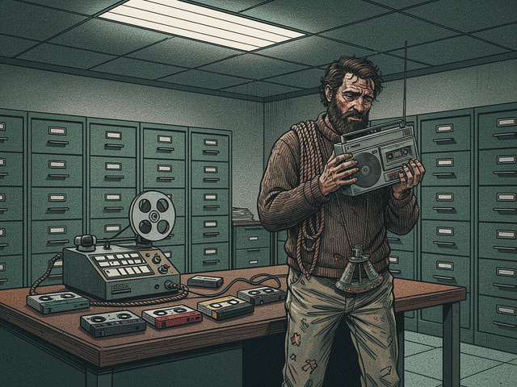

The ocean, which had swallowed the *Pequod* whole, inexplicably spat me back out. I remember little of the hours that followed the ship's final, shuddering plunge—only the cold, the black, and the desperate grip I maintained on a half-shattered wooden crate. The sky hung bruised and purple above me. Salt and diesel coated my tongue. Eventually, the distant thrum of an engine grew into the hull of a Norwegian container ship, its stern light cutting through the pre-dawn murk, carving a path that led me not to redemption, but to a different kind of confinement.
Weeks later, the hum of fluorescent lights replaced the constant groan of the *Pequod*'s hull. Stale coffee and disinfectant supplanted brine and oil. I sat across a polished laminate table in a government office in Anchorage, the silence so profound it became a third presence in the room. My cassette recorder, battered but functional, lay between me and the two men in sensible suits. The older one, all weary eyes and careful pauses, introduced himself as Agent Thompson. The younger, sharper, was Agent Miller. They had questions—a dozen at least—but their gazes kept drifting to the recorder, to those small plastic reels holding the only testament to our voyage.
"So, Mr. Ishmael," Thompson began, voice flat as the table between us, "you recorded everything, you say?"
I nodded. My throat felt packed with sand. "Most of it. The important parts."
Miller leaned forward, skepticism bright in his expression. "You understand this isn't standard procedure for maritime incident reports? Audio logs from a... civilian."
"I was a chronicler," I said, my voice coming out raw. "Someone had to remember. Someone had to *hear* it."
Thompson sighed, then reached for the recorder. I didn't resist. He pressed 'Play'.
Metallic hiss filled the room, then a faint click. And the *Pequod* lived again. The creak of stressed timbers, the whine of poorly maintained hydraulics. Stubb's sardonic chuckle, laced with that familiar wet cough. Starbuck's weary Nantucket drawl, barely audible beneath the roar of a squall. And then, sharper, clearer, the chilling certainty of Ahab's voice—a prophet of doom etched onto magnetic tape.
*"The White Sound,"* he snarled from the speakers, his voice scraped raw with obsession. *"A frequency that sings of defiance."*
The agents exchanged a look I couldn't quite parse. Disbelief? Intrigue? I heard the whale's distant echo on the tape, that low, resonant thrum that seemed to vibrate in my bones even now, even across the sterile divide of time and space. It was the sound that had driven Ahab, that had drawn us all like moths battering themselves against flame.
"This... 'White Sound'," Miller said, pausing the tape with a click. "You're saying this whale had some kind of unique acoustic signature?"
"Unlike anything I'd ever heard." My gaze fixed on the spinning reels. "Fedallah believed it was almost... intelligent. A language."
"Fedallah." Thompson mused, scribbling something on his pad. "Ahab's electronics man. The one who... disappeared."
I clenched my jaw. "He was killed. By the whale." The words felt inadequate, flattened against the backdrop of chaos they represented. The explosive harpoon, the frantic screams, the shuddering, rending metal as the *Pequod* met its end—all reduced to a single factual statement.
Thompson restarted the tape. The familiar, mournful cries of humpbacks gave way to something deeper, more ancient. Then frantic shouts, splintering wood, the gurgle of water filling compromised bulkheads. And finally, the crushing metallic shriek of the *Pequod* tearing itself apart, followed by sudden, profound silence, broken only by the slosh of water and my own ragged breathing.
The tape ran out, the end-leader flapping gently. Thompson clicked it off. The fluorescent hum returned, louder now, insistent.
"So the ship was destroyed by the whale," Miller stated. Less a question than a conclusion. "And Captain Ahab was... lost."
"Yes." But it wasn't just the whale that destroyed the *Pequod*. It was the hubris, the vengeance, the relentless, technologically driven pursuit of something that refused to be categorized, to be captured, to be understood.
"And the whale?" Thompson asked, his eyes meeting mine. "Was it killed?"
I shook my head. The White Whale remained an enigma. A phantom of the deep. It had vanished into the churning aftermath, its colossal form swallowed by the very ocean we had tried to conquer. Not a monster. Not a god. Just... a force. An indifference so profound it was almost beautiful, a purity of nature that rebuked our frantic, grasping ambition.
"We saw it breach once more," I said, my voice dropping to a whisper. "Just before the end. Unscathed. Untouched. As if it had simply... observed."
They looked at me—two men of facts and figures—and I knew they would never comprehend. They saw a sunken ship, a lost crew, a failed venture. I saw the *sound* that haunted my dreams, the echo of a forgotten world challenging the sharp-edged reality of ours.
The room held its silence for a long moment, the unplayed tapes a mute testament to madness and wonder. I survived to tell the tale, but the telling brought no closure. The White Whale, the White Sound, still pulses in the deep—a living counterpoint to the sterile silence of a world that refuses to acknowledge its wild, untamed heart. I am merely its reluctant messenger, forever listening for that distant, chilling echo.